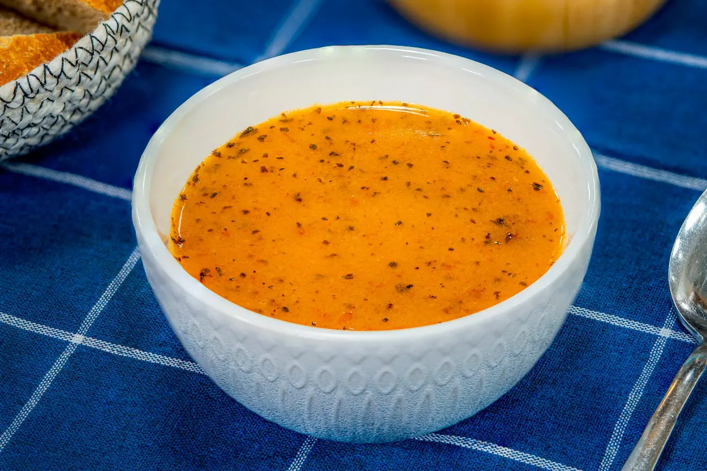

... TARHANA ÇORBASI TARİFİ ...

TAM KIVAMINDA: TARHANA
ÇORBASI
=TARHANA ÇORBASI İÇİN MALZEMELER=
- 4 yemek kaşığı toz tarhana
- 1 yemek kaşığı kuru nane
- 7 su bardağı su
- 1 yemek kaşığı ayçiçek yaği
- 1 yemek kaşığı tereyağı
- 1 yemek kaşığı domates salçası
- 1 çay kaşığı tuz
- 1 diş samırsak (ezilmiş)
=TARHANA ÇORBASI TARİFİ NASIL YAPILIR=